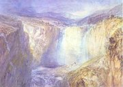
Turner: Vodopád
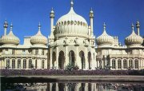
Královskı pavilon v Brightonu
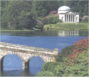
Anglickı romantickı park
|
ANGLICKİ ROMANTISMUS
I kdy� ve Velké Británii nevládl absolutistickı panovník a jeho moc omezoval parlament, zavládl zde podobnı strach z Velké francouzské revoluce jako v jinıch evropskıch zemích. Brity rovnì� tì�ce zasáhla Napoleonova námoøní blokáda. Revoluèní nepokoje v Anglii mìly mírnìjší formu. Jejich vısledkem bylo omezení vlivu horní snìmovny parlamentu a rozšíøení volebního práva.
Romantismus ovlivnil umìní i myšlení ve vìtšinì zemí, angliètina ale dala novému smìru jméno. V anglickém malíøství se rozvinulo hlavnì krajináøství. Vìnoval se mu Thomas Gainsborough [gejnzbere] (1727-1788), John Constable [kanstebl] (1776-1837) nebo John Martin (1789-1854). William Turner [térnr] (1775-1851) je pova�ován za pøedchùdce impresionismu.
První generací anglickıch romantickıch spisovatelù byli tzv. jezerní básníci. Patøí k nim William Wordsworth [vérdzvérs] (1770-1850) a Samuel Taylor Coleridge [koulrid�] (1772-1834).
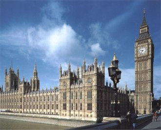
|
Historie
Na konci 18. století pøišla Velká Británie o americké kolonie, ale získala Kanadu, Austrálii, Indii a další území v Asii a Africe. Roku 1798 se musela vypoøádat s povstáním Irù. Úspìšnì èelila francouzské námoøní blokádì a podílela se na koneèné porá�ce Napoleona I. Za vlády královny Viktorie I. (1837-1901) se stala nejvıznamnìjší svìtovou mocností.
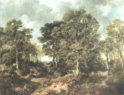
Gainsboroughùv les
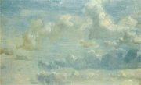
Constable: Studie oblakù
|
William Blake (1757-1827)
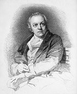
Blake [blejk] se vyuèil mìdirytcem. Od dìtství mìl rùzná vidìní – rozmlouval s Ezechielem, Šalomounem nebo svatım Pavlem a umìl pøedpovídat budoucnost. Souèasníky byl pova�ován za blázna. �il v chudobì, na okraji zájmu spoleènosti. Básnì si tiskl sám. Doprovázel je ilustracemi vytvoøenımi technikou reliéfního leptu, které ruènì koloroval. Napsal mystické texty Písnièky nevinnosti, Písnièky zkušenosti nebo Sòatek nebe s peklem. Ilustroval biblickou Knihu Jobovu a Dantovu Bo�skou komedii. Nìkdy bıvá pova�ován za pøedchùdce symbolismu, jindy za preromantika.
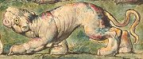
|
William Blake: Sòatek nebe s peklem
Kniha Sòatek nebe s peklem obsahuje Blakeovy kontroverzní prózy, ve kterıch ironizuje Desatero, církev, racionalismus a názory švédského myslitele Emanuela Swedenborga. Blake vyzdvihuje energii jako hlavní kladnou sílu v èlovìku. Jeliko� jde o projev tìla, církev tuto lidskou stránku zatratila a nazvala ji ïáblem. V Pekelnıch pøíslovích Blake parafrázuje pøísloví starozákonní, staví se ovšem na stranu ïábla...
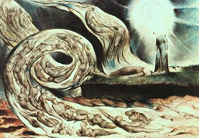
Blake: Vichøice milencù (ilustrace k Dantovì Peklu)
|
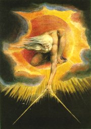
Blake: Duch dávnıch dnù
Jak na tebe pùsobí Blakeovy obrazy?
Které pøísloví tì zaujalo? Proè? Budeš se jím øídit?
Kdo byl Emanuel Swedenborg?
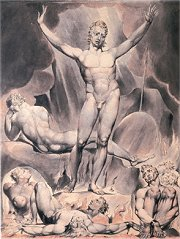
|
George Gordon Byron
(1788-1824)
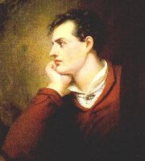
Lord George Gordon Byron [d�órd� górdn baj(e)rn] musel
po milostné aféøe s nevlastní sestrou a rozvodu opustit Anglii. Cestoval po Evropì, s pøítelem Shelleym pobıval ve Švıcarsku a nakonec se usadil v Itálii. Smrt našel v Øecku, kde onemocnìl malárií, kdy� pøijel podpoøit zdejší protiturecké povstání. Napsal lyrickoepické básnì (tzv. byronské povídky) Childe Haroldova pou�, D�aur, Korzár, Lara, Chillonskı vìzeò a Don Juan, dramata Manfréd a Kain nebo básnické sbírky Hodiny zahálky a Hebrejské melodie.
Byron napsal báseò Nevìsta z Abydu a pøeplaval Helespont ze Sestu do Abydu. Proè?
|
George Gordon Byron: Childe Haroldova pou�
Childe Haroldova pou� [èaild] je rozsáhlá lyrickoepická skladba, která se odehrává v rùznıch èástech Evropy. Titulní hrdina Childe Harold utíká pøed prázdnım �ivotem z Anglie. Postupnì navštíví Portugalsko, které obsadila anglická armáda, Španìlsko, které válèí proti Napoleonovi, a Albánii. Pokraèuje do Øecka, jeho� slavná minulost kontrastuje s úpadkem v dobì turecké nadvlády. Další zastávkou je bojištì u Waterloo. Odtud Harold putuje do Alp, kde opìvuje švıcarskou pøírodu. Závìr básnì se odehrává v Itálii. I zde hrdina vidí bídnou souèasnost, která nedosahuje slávy starovìkého Øíma, ani období renesance.
Ó krásné Øecko! veliké i v pádu!
v�dy nesmrtelné, aè tì více není!
Kdo povede tvé dìti? kdo�e vládu
jich dlouhé poroby v los lepší zmìní?
Ó kde jsou synové tví proslavení,
co v jícen smrtnı èernıch Thermopyl
se samovolnì vrhli v utracení?
Kdo� ducha jich by v sebe pochopil
a tebe probudil i z hrobu vykoupil?
|
George Gordon Byron: Manfréd
Titulní hrdina dramatu Manfréd vládne své zemi z osamìlého hradu uprostøed Alp. Vìnuje se astrologii a kouzelnictví, aby zapomnìl na smrt milované Astarté, která zøejmì zemøela jeho vinnou. Hledá lék na své utrpení, pokusí se o sebevra�du, z vodní tøíštì vyvolá alpskou vílu a nakonec vyhledá démona Arimána. Podaøí se mu spatøit pøízrak Astarté, ale kdy� jí vyzná lásku, dozví se od ní jen to, �e zítøejšího dne zemøe. Manfréd zvítìzí nad svım strachem ze smrti i démony a umírá.
|
Byronismus
Romantiètí básníci z jinıch zemí (Lermontov, Mácha a další) byli èasto napadáni, �e Byrona pouze napodobují. Kritikové je nazıvali hanlivım oznaèením byronisté.
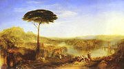
Turner: Childe Haroldova pou�
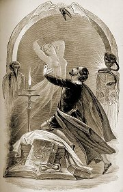
Manfréd a Astarté
|
Percy Bysshe Shelley
(1792-1822)
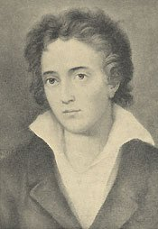
Percy Bysshe Shelley [pérsi biš šeli] pocházel ze šlechtické rodiny. Proslul jako bojovník proti útlaku. Pomáhal Irùm v jejich snaze osvobodit se od anglické nadvlády. Za spis Nezbytnost ateismu byl vylouèen z univerzity. Kdy� mu soud jako známému buøièi odmítl vydat dìti z prvního man�elství, pøestìhoval se s novou chotí do Itálie. Pøi ztroskotání lodi Ariel utonul v moøi. Shelley je autorem eposù Islámská vzpoura a Královna Mab, lyrického dramatu Odpoutanı Prometheus a tragédie Cenciové.
|
Percy Bysshe Shelley: Odpoutanı Prometheus
Dramatická báseò Odpoutanı Prometheus vychází z øecké báje o Titánovi, kterého bohové pøikovali ke kavkazskému útesu, proto�e pøedal lidstvu jejich oheò. V Shelleyho zpracování se pøíbìh mìní v alegorické støetnutí Promethea (symbol Dobra a Krásy), tyranského vládce bohù Jupitera a Demogorgona (beztvaré a nehmotné bo�stvo Nutnosti). Jupiter je svr�en Demogorgonem, Prometheus odpoután a jeho milá Asia se promìòuje v „�ivot �ivota“ – ztìlesnìní Pøírody a Lásky. Skladba konèí Demogorgonovou ódou na dobré lidské vlastnosti.
„Napsal jsem tuto báseò témìø celou na horskıch zøíceninách Caracallovıch lázní uprostøed kvìtinovıch paloukù a houštin vonnıch kvetoucích stromù, které se rozprostírají v nekoneèné klikatinì bludiš� po obrovskıch terasách lázní a závratnıch klenbách pnoucích se do vıše. Inspirací tohoto dramatu bylo øímské záøivé modré nebe a pùsobení bujnì se probouzejícího jara v tak bo�ském podnebí i novı �ivot, kterı a� omamnì zaplavuje lidské duše.“
|
Mary Shelleyová (1797-1851)
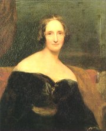
Man�elka romantického básníka Shelleyho Mary napsala proslulı hororovı román Frankenstein èili Moderní Prometheus a katastrofickı pøíbìh Poslední èlovìk.
Kterıch lidskıch vlastností si Demogorgon cení nejvíce?
Shelley bıvá pova�ován za zakladatele titanismu. Co si pod tímto termínem pøedstavuješ?
Kdo napsal drama Spoutanı Prometheus?
Jak popisují Demogorgona encyklopedie?
|
Walter Scott (1771-1832)
Walter Scott [vóltr skot] pocházel ze Skotska. Je pova�ován za zakladatele romantické historické prózy. Napsal romány Waverley, Ivanhoe, Rob Roy, Kenilworth, Srdce Edinburgu, Nevìsta lammermoorská nebo Puritáni a básnì Panna jezerní a Píseò posledního skotského barda.
Co víš o puritánech?
Kdo byl Rob Roy?
Pøevyprávìj povìst o Robinu Hoodovi.
|
Walter Scott: Ivanhoe
Historickı román Ivanhoe se odehrává na konci 12. století. Kdy� se anglickı král Richard Lví srdce vracel z køí�ové vıpravy, upadl do zajetí. V Anglii se zatím chopil vlády jeho intrikánskı bratr Jan a normanští šlechtici, kteøí terorizovali prosté obyvatele i starou saskou šlechtu. Proti Janovım stoupencùm bojuje Vydìdìnı rytíø (Ivanhoe), luèištník Locksley (Robin Hood) a Èernı rytíø (král Richard). Spoleènımi silami nakonec obnoví v zemi poøádek.
|
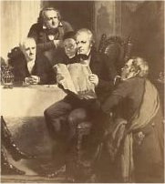
Thomas Faed: Walter Scott pøedèítá ze svého rukopisu
V knize vystupují rovnì� �enské postavy – �idovka Rebeka a Rowena. Jakou hrají v romantickém pøíbìhu roli?
|
Èernı (gotickı) román
V 18. století zaèaly bıt velmi populární tzv. èerné nebo gotické romány. Šlo o hrùzostrašné pøíbìhy, které zobrazovaly temné stránky lidské duše. Vìtšinou se odehrávaly v tajemném prostøedí hradù a klášterù s tajnımi chodbami. V èernıch románech nesmìly chybìt zloduchové, vra�dy, zloèiny, záhady a kouzla. Na druhé stranì zobrazovaly èistou lásku nebo nezištné pøátelství. Úroveò tohoto ètiva nebyla nikterak vysoká a èasté dìjové zvraty pùsobí znaènì nevìrohodnì. K nejznámìjším autorùm èernıch románù patøí Horace Walpole: Otrantskı zámek (1764), Ann Radcliffová: Záhady Udolpha (1794), Matthew Gregory Lewis: Mnich (1795) a Charles Robert Maturin: Poutník Melmoth.
|
Matthew Gregory Lewis: Mnich
Hlavní postavou Lewisova [lúis] románu je opat Ambrosio, kterého si všichni vá�í pro jeho ctnosti. Samolibı mnich ale postupnì podlehne zrùdnému chtíèi a skonèí v rukou samotného ïábla. Nejprve navá�e pomìr s èarodìjkou Matyldou, která se do jeho kláštera vloudila v pøestrojení za novice. Pozdìji se zamiluje do krásné Antonie a s pomocí kouzel se jí zmocní. Antonii miluje rovnì� Lorenzo, jeho� sestru Agnes vìzní v podzemní kryptì abatyše madridského kláštera. Svou sestru nakonec zachrání, ale Antonie zemøe rukou chlípného mnicha Ambrosia.
Další autoøi a díla
Jane Austenová: Pıcha a pøedsudek, Rozum a cit, Emma
Emily Brontëová: Na vìtrné hùrce
Charlotte Brontëová: Jana Eyrová
John Keats: Óda na øeckou vázu
|
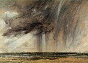
Constable: Déš� nad brightonskım pobøe�ím
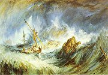
Turner: Ztroskotání lodi v bouøi
Jak na tebe pùsobí ukázka z Mnicha?
Kterımi prostøedky autor dosáhl patøièného úèinku?
|
Internetové stránky
Blake Digital Text Project
The William Blake Archive
William Blake Online
William Blake, obrazy
Byron, ilustrace
Byron, díla
Byron
Byron
Byron
Shelleyovi
Shelley
Shelley
Scott
Matthew Gregory Lewis
Exkurze
Tate Gallery London, Turner
Royal Pavilion Brighton
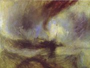
Turner: Parník ve snìhové bouøi
|
Doporuèená èetba
Ackroyd, Peter: Blake, pøel. S.Ficová, Paseka, Praha 2000
Austenová, Jane: Rozum a cit
Blake, William: Napíšu verše kytkám na listy, pøel. Z.Hron, Èeskoslovenskı spisovatel, Praha 1981
Byron, George Gordon: Childe Haroldova pou�, pøel. E.Krásnohorská, Praha 1919
Byron, G.G.: Manfréd, pøel. M.Procházka, Supraphon, Praha 1989
Byron, G.G.: Poutník z Albionu, pøel. H.�antovská, Èeskoslovenskı spisovatel, Praha 1981
Coleridge, Samuel Taylor: Draèí køídlo stesku, pøel. V.Renè, Mladá fronta, Praha 1965
Coleridge, S.T.: Píseò o starém námoøníku, pøel. V.Renè, Praha 1988
Dìjiny anglické literatury, SPN, Praha 1988
Durdík, Josef: O poesii a povaze lorda Byrona, J.Otto, Praha 1890
Chudoba, František: Pod listnatım stromem, nakl. J.Laichtera v Praze, 1947
Jezerní básníci, pøel. Z.Hron, Mladá fronta, Praha 1999
Keats, John: Déš� z plané rù�e, pøel. H.�antovská, Mladá fronta, Praha 1994
Keats, J.: Kdy� mraky záøí, pøel. J.Hauková, Praha 1961
Keats, J.: Obrys krásy, pøel. H.�antovská, Mladá fronta, Praha 1977
Lewis, Matthew Gregory: Mnich, pøel. F.Vrba, Odeon, Praha 1971
Maurois, André: Ariel aneb �ivot Shelleyho (román)
Maurois, A.: �ivot lorda Byrona, pøel. M.Janù, Praha 1979 (román)
Scott, Walter: Ivanhoe, pøel. J.Kraus, Praha 1989
Scott, W.: Rob Roy
Scott, W.: Waverley aneb Pøed šedesáti lety
Shelley, Mary: Frankenstein, pøel. T.Korbaø, Práce, Praha 1991
Shelley, Percy Bysshe: Odpoutanı Prométheus, Lyrické drama, pøel. J.Valja, Mladá fronta, Praha 1962
Støíbrnı, Zdenìk: Dìjiny anglické literatury, Akademia, Praha 1987
Tøi stálice, pøel. J.Urbánková, Èeskoslovenskı spisovatel, Praha 1974 (Wordsworth , Keats, Shelley)
|
Pøiprav si referát o nìkteré z uvedenıch knih nebo internetovıch stránek.
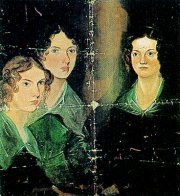
Sestry Brontëovy
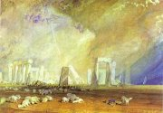
Turner: Stonehenge
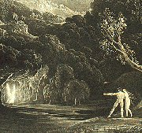
Martin: Ztracenı ráj
|
|